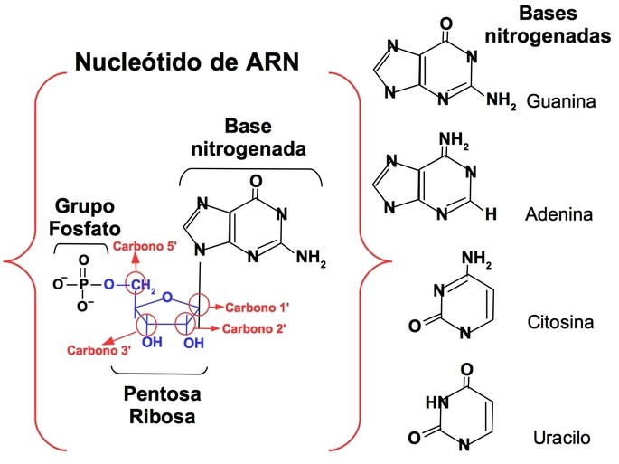
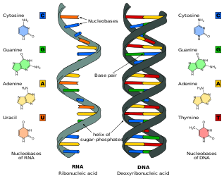

BIOLOGIA
Trabajo #1
¿QUE ES EL ARN?
El ARN, o ácido ribonucleico, es una molécula esencial en la biología que desempeña un papel fundamental en la transferencia de información genética y la síntesis de proteínas en las células. Es una molécula relacionada con el ADN (ácido desoxirribonucleico) pero con algunas diferencias importantes:
-
1. COMPOSICION QUIMICA: El ARN está compuesto por una cadena de nucleótidos, al igual que el ADN. Cada nucleótido de ARN consta de tres componentes principales: un azúcar ribosa, un grupo fosfato y una de cuatro bases nitrogenadas (adenina, guanina, citosina y uracilo). En contraste, el ADN contiene desoxirribosa en lugar de ribosa y la base timina en lugar de uracilo.
 -
2. ESTRUCTURA: El ARN es generalmente una molécula de cadena sencilla, a diferencia del ADN, que suele ser una molécula de doble cadena en forma de hélice. La estructura de cadena sencilla del ARN le permite adoptar diversas formas y estructuras tridimensionales, lo que le permite llevar a cabo diversas funciones biológicas. 
-
3. FUNCIONES: El ARN tiene múltiples funciones en las células, siendo una de las más importantes la transferencia de información genética. En el proceso de transcripción, una molécula de ARN se sintetiza a partir de una hebra de ADN. Este ARN mensajero (ARNm) lleva la información genética desde el núcleo de la célula al ribosoma, donde se utiliza para guiar la síntesis de proteínas en un proceso llamado traducción.
Además del ARNm, existen otros tipos de ARN en las células, como el ARN ribosómico (ARNr), que forma parte de los ribosomas y es esencial para la síntesis de proteínas, y el ARN de transferencia (ARNt), que lleva aminoácidos al ribosoma durante la síntesis de proteínas.
Hay varios tipos de ARN, cada uno con funciones específicas. Los principales tipos de ARN incluyen:
-
1. ARN mensajero (ARNm): El ARNm lleva la información genética desde el ADN en el núcleo de la célula hasta los ribosomas en el citoplasma, donde se utiliza como una plantilla para la síntesis de proteínas en un proceso llamado traducción.
-
2. ARN ribosómico (ARNr): Los ARNr son componentes estructurales de los ribosomas, las estructuras celulares donde ocurre la síntesis de proteínas. Los ribosomas están compuestos por proteínas y ARNr, y el ARNr ayuda a facilitar la unión y la reacción química necesaria para la formación de proteínas.
-
3. ARN de transferencia (ARNt): Los ARNt son moléculas que transportan aminoácidos individuales al ribosoma durante la síntesis de proteínas. Cada ARNt tiene una secuencia de bases que se empareja con una secuencia específica de ARNm y un aminoácido en un extremo.
-
4. ARN pequeño nuclear (ARNsn):Los ARNsn son componentes del splicing del ARN, un proceso en el que las partes no codificantes (intrones) se eliminan de los transcritos de ARNm para producir un ARNm maduro funcional. Los ARNsn ayudan en este proceso.
-
5. ARN pequeño nucleolar (ARNsno): Los ARNsno se encuentran en el núcleo celular y están involucrados en la modificación química de los ARNr y los ARNt, lo que es crucial para su funcionalidad en la síntesis de proteínas.
-
6. ARN pequeño citoplasmático (ARNsc): Los ARNsc son pequeños ARN que están involucrados en la regulación de la síntesis de proteínas y otros procesos celulares, como la degradación de ARNm y la regulación de la traducción.
-
7. ARN antisentido (ARNas): Los ARNas son secuencias de ARN que son complementarias a otras secuencias de ARNm. Pueden unirse al ARNm correspondiente y regular su estabilidad o su capacidad para ser traducido en proteínas.
-
8. ARN largo no codificante (ARNlnc): Estos son ARN que no codifican proteínas, pero tienen funciones reguladoras en la expresión génica y en diversos procesos celulares.
En resumen, el ARN es una molécula vital en la biología que desempeña un papel crucial en la transferencia de información genética y la síntesis de proteínas en las células. Es esencial para la vida y la función de todos los organismos vivos.